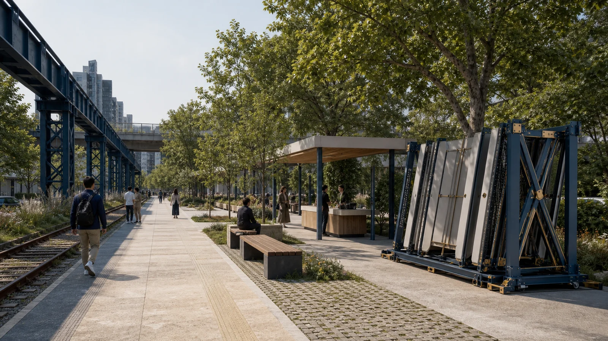
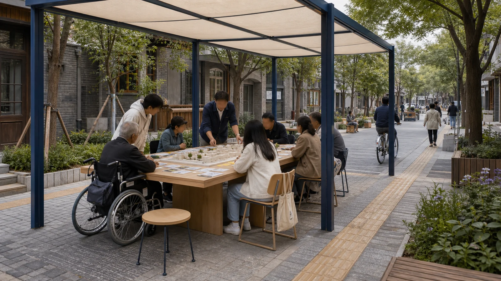
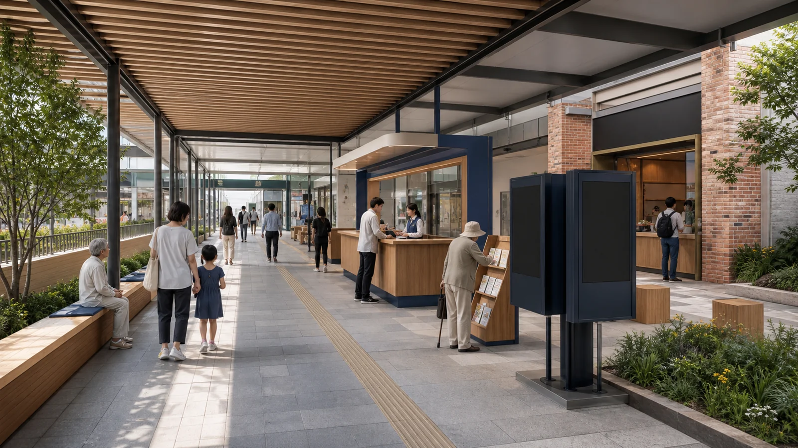

众智园
遗产绿廊 × 低扰动测试边界
- 日常：绿廊先行
- 试验：预约开放
- 故障：设备断电，人行不断
- 退出：拆架复绿
agent.1 / agent.3 / agent.4 / agent.6 · 0–90 d
AI 生成概念场景，不是现场照片离线电子展示成果。权威数据仍以 GeoJSON、metrics.json、矩阵和自检结果为准；本页把总览地图、三层范围、重点区域、用地分区、交通慢行、蓝绿公共空间、建筑更新项目、AI 场景、核心指标、任务覆盖、自检状态、来源与假设转成人类可读的视觉说明。
约 100 m 概念研究窗口，不是地籍或工程图。每处都明确日常、试验、故障和退出；失败时设备停用，公共服务基线继续。

遗产绿廊 × 低扰动测试边界
agent.1 / agent.3 / agent.4 / agent.6 · 0–90 d
AI 生成概念场景，不是现场照片
共享街道 × 人主持的公开评审
agent.1 / agent.2 / agent.3 / agent.5 / agent.6 · 0–90 d
AI 生成概念场景，不是现场照片
站城公共厅 × 离线仍可用
agent.1 / agent.2 / agent.3 / agent.4 / agent.5 / agent.6 · 0–90 d
AI 生成概念场景，不是现场照片总览地图将用地分区、交通慢行、蓝绿公共空间、建筑与更新项目、AI 场景节点放在同一张证据图中，便于评审快速理解空间主线。
方案按统筹研究范围、总体设计范围、重点区域范围递进，把产业判断、城市更新和重点片区设计绑定到图层与指标。
面向约 43.6 平方公里提出 AI 产业生态、三区两翼协同、未来城市形态和文化叙事。
面向约 11.4 平方公里组织城市更新、用地结构、交通市政、京张遗址公园活力带。
面向三处 provisional 片区开展概念详细设计，说明功能业态、公共空间与待核交通接口。
三处 provisional 重点区以不同界面检验同一套公共利益、证据门与退出规则。
概念方向：清河创新客厅、受控工程测试与对外公共解释；生态、交通和主体待核。
概念方向：近校共享街、研究人才协作与社区服务；存量空间、权属与开放协议待核。
概念方向：站城公共厅、可撤智能原生服务与日常商业支持；四向联络仍为工程 unknown。
agent.1 · 母名、Logo方向、三大定位、五大功能与三区两翼协同回路。
开口 = 可修订；刻度 = 工程证据；圆点 = 人类最终判断。概念建议，待许可与近似商标检索。
协同关系示意，不是方位、用地或工程线位图。三大定位：京张文化 / 都市AI生活 / AI融合创新；五大功能见 proposal.md agent.1。
agent.2 · 五个官方网页可核案例，只迁移机制；本地伙伴、资金、算力与规模保持 unknown。
| 本地系统 | 角色 | 空间载体 | 状态 |
|---|---|---|---|
| 众智园全栈体系 | 问题界定—工程—评测—交接 | 开放创新客厅＋受控室内测试 | 主体/容量/投资 unknown |
| AI原点社区 | 研究、人才、开发者与社区共创 | 共享街＋公共节点＋许可协作空间 | 参与规模/开放场所 unknown |
| 中关村科技服务翼 | 知识产权、标准、法务、人才与资本服务入口 | 线上服务台＋经确认存量服务点 | 伙伴/资金/效果 unknown |
agent.3 · 全部为概念建议；4个 INDUSTRY-TEST 只允许在批准的受控环境内运行。
| ID | 概念场景 | 空间—运营 | 前置条件 / 人工边界 |
|---|---|---|---|
| SC-01 | 无障碍慢行助手 | 公带＋横向联系；运维发布绕行 | 实测与使用者/专业人员验收；过期停自动推荐 |
| SC-02 | 设施故障分诊 | 公共节点；人工工单队列 | 模型只排序，关闭须人工核验 |
| SC-03 | 树荫与休息巡检助手 | 绿脊；季节性人工抽样 | 不采人脸/轨迹；退回人工表单 |
| SC-04 | 多语公共解释台 | 遗址点＋大钟寺公共厅 | 历史/译审/版权；高风险内容编辑确认 |
| SC-05 | 社区服务导航 | 原点共享街；公开服务目录 | 不推断健康/收入；资格由服务人员决定 |
| SC-06 | 低扰动活动调度 | 可撤活动单元；影响台账 | 消防/噪声/通行失败即暂停 |
| SC-07 | 开放问题协作台 | 众智园创新客厅 | 不接个人/商业秘密；人类评审开发入口 |
| SC-08 | 合成数据互操作测试 INDUSTRY-TEST | 受控室内沙盒 | 禁真实个人数据；人工签名，不能直接上线 |
| SC-09 | 边缘设备耐候测试 INDUSTRY-TEST | 小月河可撤测试窗，位置待核 | 无摄像/麦克风；生态/通行受影响即撤 |
| SC-10 | 室内机器人补给协同 INDUSTRY-TEST | 批准的封闭室内路线 | 安全员在场、一键停机，不外推室外可行 |
| SC-11 | 模型红队与人工复核 INDUSTRY-TEST | 受控评测室 | 高影响输出不自动执行；独立复核签认 |
| SC-12 | 小商户自愿内容助手 | 大钟寺服务点 | 不抓经营数据；商户确认发布、退出删除 |
P-01居民 · P-02通勤接送 · P-03行动不便/照护 · P-04师生研究者 · P-05开发者初创 · P-06小商户 · P-07访客 · P-08运营复核者。均为任务画像，不是调查统计。
agent.4 · 三个低娱乐化公共地标、贡献谱荣誉体系和八类可撤组件。
遗址公园的低矮刻度带；历史审校、文保、无障碍与许可后才能落位。
原点社区的人工主持评测桌；无人主持或高风险内容即关闭数字层。
大钟寺的双面状态台；数据过期翻回 UNKNOWN，屏幕停机不妨碍穿行。
| 荣誉系统 | 组件库 | 共同边界 |
|---|---|---|
| OPEN 可复用 · CARE 公共修复 · REVIEW 纠错 · STEWARD 维护退出 | C-01导向条 · C-02休息缘 · C-03展示轨 · C-04人工服务桌 · C-05评测桌 · C-06责任铭牌 · C-07测试架 · C-08安静活动单元 | 概念类型，不是采购/建设数量；位置、尺寸、材料、单价、主体和审批均 unknown |
agent.5 · “自主工程—开放创新—负责任AI”，文化导视与母品牌Logo严格分开。
双线 = 历史证据＋公共使用；刻度 = 可停留解释节点；版本戳 = 内容生效时间。四级信息：LINE / NODE / STORY / STATUS。
沿着一条自主工程的百年线索，让每一个AI提案都经得起公共生活的检验。
Along a century-old line of independent engineering, every AI proposal is tested against everyday public life.
agent.6 · 探针接力 PROBE Relay：四类拟议年度项目、开发者循环、开放门与证据转化。
| 路径 | 必须留下的证据 | 不等于 |
|---|---|---|
| 内容触达 → 自愿参与 | 同意、来源页、退出方式 | 浏览/报名 ≠ 人才落地 |
| 问题协作 → 沙盒原型 | brief、许可、版本、红队与人工复核 | demo ≠ 全面部署 |
| 沙盒 → 有限试点 | 场地/主体/安全/隐私/无障碍批准 | 试点 ≠ 采购、政策或长期运营 |
| 试点 → 长期关系 | 有效合同、预算、责任、退出与公开范围 | 本方案不承诺企业、资金、产值或财政支持 |
developer_to_pilot_conversion_ratio / annual_participant_count / approved_scenario_count 均为 status: unknown；需同批次口径、批准台账和共同观察窗口。
compliance_matrix.json 覆盖公告 1.3、1.4、1.5 与 agent.1-agent.6；standard_matrix.json 与 design_depth_matrix.json 证明专业标准和成果深度。
来源见 sources.json、agent_taskbook.json、data/processed/agent_fact_pack.md 和 standards/references。本页不得加载 CDN、远程地图瓦片、外部脚本、外部字体、API 请求或 iframe。
待补控规、道路红线、权属、市政、文保和工程条件必须在 assumptions.json 中列明，并在正文中解释对设计结论的影响。